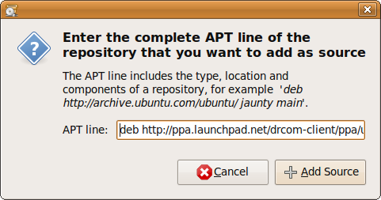
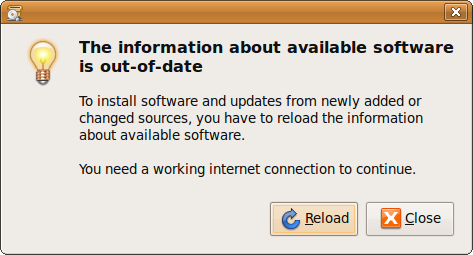
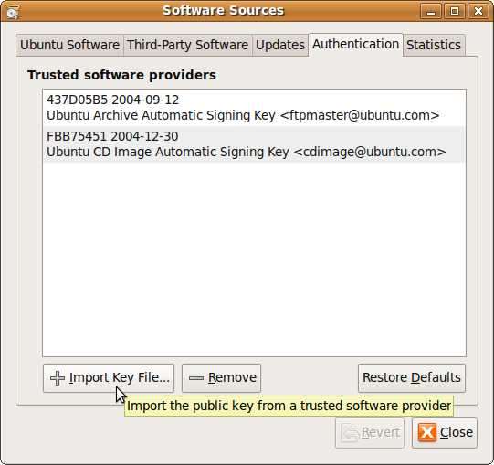

Tutorials
Now available for drcom-client PUM v1.0
Linux Distro used here -- Ubuntu 9.04 (Jaunty)
[Install | Run | Login | Status | Logout | Password | Uninstall | Handle Error]
Install drcom-client
Source Code Installation
- Download the latest source tarball
- Compile source code and Install in the system
Binary Package Installation
- Ubuntu/Debian Package (.deb)
- Fedora Package (.rpm)
APT-GET Installation
- Open System -> Administration -> Software Sources
- Find the tag named "Third-Party Software",and Click "Add", add these two URLs in:
deb http://ppa.launchpad.net/drcom-client/ppa/ubuntu/ jaunty main
deb-src http://ppa.launchpad.net/drcom-client/ppa/ubuntu/ jaunty main
If the version of Ubuntu you used is NOT Jaunty, please replace "jaunty" with "hardy" or "intrepid".

- Then reload it, yeah, that's OK.
- You could do the same job in the command-line way.
- Download our GPG KEY file drcom.key
- Then find the tag named "Authentication" in "Software Sources", and click Import Key File, add drcom.key just downloaded.
You can find the latest source tarball here.
Suppose that you have downloaded the source tarball named
drcom-pum-1.0.tar.gz
$ tar zxvf drcom-pum-1.0.tar.gz $ cd drcom-pum-1.0/ $ make & sudo make install
If you have installed g-drcomclient before, you'd better uninstall it first. Otherwise, it will cause some problems.
$ sudo dpkg -r drcom-client
Now you could install drcom-pum.
$ sudo dpkg -i drcom-pum_1.0_all.deb
Note: you can install this package by Double Click it.
$ sudo rpm -ivh drcom-pum_1.0_all.rpm
We strongly recommend you to take this way of installation!
Configuration
You should add our URLs into your Ubuntu Software Sources.

$ sudo vim /etc/apt/sources.listAdd these two URLs above in. Then,
$ sudo apt-get update
$ sudo apt-get install drcom-pum
So easy ?
Suggestion: import our GPG KEY into your system
Run
If you use GNOME as default Desktop, you will find drcom-client launcher in Applications->Internet.

- Note:
- If you try to DEBUG drcom-client program, you could type drcomclient command in your terminal.
Login
It is very convenient to login/logout with the help of friendly GUI in drcom-client PUM.
This is the login window of drcom-client PUM.
Left-Click "LOGIN" button.

OR
You could Right-Click System Tray  in the upside panel,
in the upside panel,
and then Left-Click "CONNECT" menu item.

When you login successfully, system balloon will display like:

Check Status
It is common for users to come across the situation that they could not confirm whether drcom-client is on-line or off-line at present.
We add the status check function for those users.
Move MOUSE to the System Tray , and it will display like:
When drcom-client is on-line

When drcom-client is off-line

Logout
It is quite similar to login the drcom-client.
You could Left-Click "LOGOUT" button in the login window, or Left-Click "DISCONNECT" item in the menu list.
When you logout successfully, system balloon will display like:

Change Password
If you want to change the password, you could Right-Click the System Tray and choose the PassWord in menu list.
Then you Left-Click the PassWord item, it will display like:

- Note:
- You could not change your password while the drcom-client is on-line (already log in).
Uninstall
Uninstall the drcom-client PUM is similar to installation.
Source Code Uninstallation
Binary Package Uninstallation
- Ubuntu/Debian Package (.deb)
- Fedora Package (.rpm)
It will easy when you have kept the source tarball after the installation.
If not, you can download source tarball here.
Before you download, make sure the version of source tarball is matched to the drcom-client installed in your system.
Suppose that you have kept the source tarball named
drcom-pum-1.0.tar.gz
$ tar zxvf drcom-pum-1.0.tar.gz $ cd drcom-pum-1.0/ $ sudo make uninstall
If you have installed drcom-1.4.x command-line version and not uninstalled yet,
drcom-pum uninstallation will cause these errors when you try to reuse it:
FATAL: Could not open '/lib/modules/.../drcom.ko':No such file drcomd: Error loading drcom module
However, it is very easy for you to recover from this problem.
$ cd drcom-pum-1.0/src/kmod $ make & sudo make install
$ sudo dpkg -r drcom-pum_1.0_all.deb
$ sudo rpm -e drcom-pum_1.0_all.rpm
Handle Error
drcom-client PUM could handle non-serious exceptions by itself.
[Install | Run | Login | Status | Logout | Password | Uninstall | Handle Error]